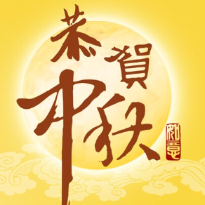

中秋节
明月几时有，把酒问青天
文章作者:xxx 文章发布时间：xx年xx月xx日
中秋节始于唐朝初年，盛行于宋朝，至明清时鼎盛，已成为与春节齐名的中国传统节日之一。受中华文化的影响，中秋节也是东亚和东南亚一些国家尤其是当地的华人华
侨的传统节日。
中秋节是汉字文化圈的重要传统节日，为每年的农历八月十五，约在公历的9月至10月初。按照农历，八月为秋季的第二个月，在中国古代称为仲秋，因此民间称为中秋
，又称秋夕、八月节、八月半、月夕、月节、 十五夜，是
汉族四大传统节日之一。

中秋节是上古天象崇拜——敬月习俗的遗痕。在二十四节气“秋分”时节，是古老的“祭月节”，中秋节则是由传统的“祭月”而来。在传统文化中，月亮和太阳一样，这两个交
替出现的天体成了先民崇拜的对象。中秋节庆源自古人对月亮的祭祀，是中华民族祭月习俗的遗存和衍生。祭月，在我国是一种十分古老的习俗，实际上是古时代我国一
些地方古人对“月神”的一种崇拜活动。据考证，最初“祭月节”是定在干支历二十四节气“秋分”这天，不过由于历史发展，后来历法融合，使用阴历（夏历），所以将“祭月
节”由干支历二十四节气“秋分”调至夏历（农历）八月十五。中秋节是秋季时令习俗的综合，其所包含的节俗因素，大都有古老的渊源。
中秋节源自天象崇拜，由上古时代秋夕祭月演变而来。祭月，历史久远，是古代我国一些地方古人对“月神”的一种崇拜活动，二十四节气的“秋分
”，是古老的“祭月节”。中秋节普及于汉代，汉代是我国南北各地的经济文化交流融合时期，各地文化上的交流使节俗融合传播。
春节
爆竹声中一岁除，春风送暖入屠苏
文章作者:xxx 文章发布时间：xx年xx月xx日
春节，即农历新年，是一年之岁首、传统意义上的年节。俗称新春、新年、新岁、岁旦、年禧、大年等，口头上又称度岁、庆岁、过年、过大年。春节历史悠久，由上古时代
岁首祈年祭祀演变而来。万物本乎天、人本乎祖，祈年祭祀、敬天法祖，报本反始也。春节的起源蕴含着深邃的文化内涵，在传承发展中承载了丰厚的历史文化底蕴。在春节
期间，全国各地均有举行各种庆贺新春活动，带有浓郁的各地域特色，热闹喜庆的气氛洋溢；这些活动以除旧布新、驱邪攘灾、拜神祭祖、纳福祈年为主要内容，形式丰富多
彩，凝聚着中华传统文化精华。
在古代民间，人们从年末廿三或廿四的祭灶便开始“忙年”了，新年到正月十九日才结束。在现代，
人们把春节定于农历正月初一，但一般至少要到正月十五新年才算结束。节日交流问候传递着亲朋乡里之间的亲情伦理，它是人们增深感情的重要节日，是个欢乐祥和、亲朋好友
欢聚的传统佳节。

-
- 节日起源
- 历史发展
- 民间习俗